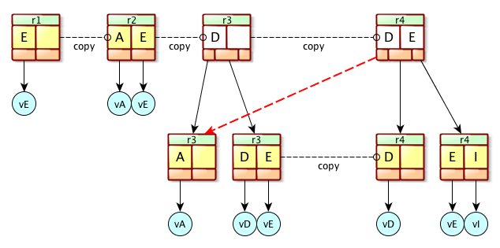
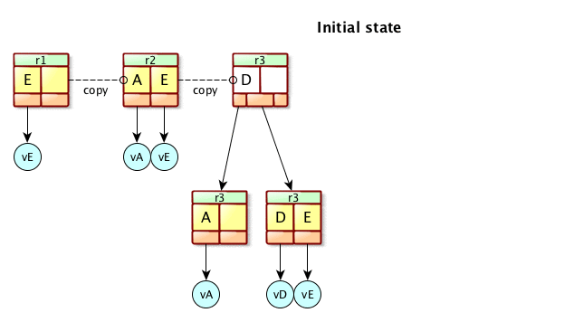

2.1 - MVCC B-tree
MVCC stands for Multi Version Concurrency Ccontrol. It all boils down to allow readers to ALWAYS have a consistent version of the data they reached at the time they started to work with them. In other words, when a reader access the database, it will work on a specific version of it, that will never change.
The drawback is that the data may be accurate at the time the reader started to work with them, but this reader will never see the updated data if a writer has modified them.
Most of the time, this is a price the users are ready to pay, for at least two reasons :
- udpates are way less frequent that reads, and the users ‘accept’ the fact that what they get is not necessarily up to date
- there are some mechanisms that workaround this problem, checking afterward that the data represent the latest state of the database, otherwise the operation is retried.
You can read more about MVCC B-tree on Wikipedia, MVCC
How does it work ?
A MVCC B-Tree is just a plain standard B+Tree, except that we keep a track of more than one version of the B+Tree. Actually, we have multiple roots, one per version. This can bee seen in this picture :

Here, we have 4 different versions, from r1 to r4. Each one of them might be used at the same time by one or many readers. In any case, the writer update only the latest one, creating a new revision doing so. In this exemple, the writer has just created r4 updating r3, adding the element ‘I’. As we can see, some pages are shared across the revisions : the leaf contaning the element ‘A’ (version r3) is also referenced by the revision r4. This is a key : that means a page (Node or Leaf may be used by many revisions).
We don’t delete old revision until they are not anymore in use. And even so, we don’t delete all the associated pages blindly : they may be referenced by newer versions that are still active.
Browsing the Database
So we want to fetch some information from a B-Tree. That’s just a matter of creating a ReadTransaction, which will grab the latest existing revision for thi B-Tree and allow you to browse data from this B-Tree. One you are done with the B-Tree, you just have to close the ReadTransaction (this is critical, because keeping it opened will pin the revision, forbidding the removal of old pages. Although if you forget to do it, the revision will be released after a period of time). This is a description of the typical code :
open a ReadTransaction
get the B-Tree you want to read
read the B-tree
...
close the ReadTransaction
It’s important to note that the transaction covers all the access on all the managed B-Tree. There is no need to open a new ReadTransaction if you want to fetch some other information from another B-Tree. That also mean you can be sure that you have a consistent view of all the database for a given revision.
You may have many threads reading data from many B-Trees, and we will have as many ReadTransaction created for that purpose. As we may keep a readTransaction opened for quite a long period of time, it’s likely that at some point, the various Threads will use different versions of the B-Trees.
Updating the Database
This is a bit more complex. Here, you need a WriteTransaction, and there can be only one running across all the application. That means the access to the Database is serialized, when it comes to update it. The direct consequence is that writes are slow.
Again, the typical call is like :
open a WriteTransaction
get the B-Tree you want to update
update the B-tree
...
close the WriteTransaction
and again, many B-Trees might be updated during this writeTransaction. For a system like a LDAP server, this is critical, because updating an entry is impacting many B-trees, and we want all of them to be consistent globally : eitehr all the B-trees are updated, or none of them.
It’s even more critical to close the writeTransaction because all the other writers are waiting for this transaction to be completed to be able to proceed.
Let’s now describe how an update works, because it’s quite convoluted.
Updates, from the tranchees…
Updating a B-Tree is not a simple operation. Actually, we want to guarantee that the operation succeed or fail, but in any case, leave the database in a consistant state. We also want to guarantee that even if a crash occurs in the middle of a write will leave the database in a consistant state. Let’s see how it’s possible.
A B-Tree is composed of 3 elements :
* The *BTreeHeader*, which contains the reference on the two other elements
* The *BTreeInfo*, which contains informations relative to this **B-Tree** (this element is never updated)
* The *RootPage*, which is the root of the **B-Tree**
Each of these elemenst are stored into Pages, and referenced through the offset of those Pages on disk (the offset is a long, and it’s just the position of a page in the database file).
The very first step is to retrieve the latest B-Tree revision. We have a management B-Tree that keeps a track of all the active revisions for every B-Tree : the BtreeOfBtrees, called BOB. It stores a reference on each B-tree’s header for every active revision. The key is a composition of the B-Tree name and its revision : *<name, revision> and it reference the BTreeHeader’s offset (the position of the BtreeHeader’s page). Fo that, we browse the BOB looking for the newest <Name, Revision> couple (actually, we are looking for the first tuple that is lower that <name, infinite>).
Once we have found the tuple, we know where to fetch the BtreeHeader from. So do we. We can then fetch the RootPage, which is the starting point for any update.
At this point, the update is either an addition or a removal. That will potentially change the whole structure of the B-Tree, or a single page. In any case, we will have a new RootPage pointing to old pages and to newly created pages. Let’s see again the previous picture :
Let’s say we are at revision 3, and we want to add an entry ‘I’ : as we can see, the rootPage is updated, the right Leaf is split in two, and the left Leaf is unchanged. All in all, we have created 3 new pages, and 2 old pages are now unused and can be reclaimed later. The internal modification of pages is not in the scope of this explaination, so we will leave it for the moment.
Here is an animated image that shows how it’s done :

So now, we have a new BtreeHeader, revision 4. We have to keep a track of it, which means we have to inject it into the BOB. As it’s a B-Tree, we proceed with it the exact same way, except that we always have a reference on the BOB BtreeHeader in the transaction context.
We are almost done. We also have to keep a track of the ‘old’ pages that were copied. In order to be able to reclaim them, we have to store them somewhere convenient. An ‘old’ page is not necessarily ‘old’ for everyone : another thread might have a reader on revision 3, thus might need those ‘old’ pages. Actually, reclaiming ‘old’ pages is a bit complex and will be explained later on. Enough said that we want to keep a track of every of those pages in a B-Tree, to be able to reclaimn them later.
We use a specific B-Tree for taht : the CopiedPageBtree, or CPB. The key is different than for the BOB, it’s a composition of the revision we are creating, and the name of the B-Tree being updated : <revision, name>. The value is the offset of the copied page. This way, when the revision is not anymore in use by any reader, we can reclaim the associated pages.
The CPB is a B-Tree, so the update process is the one we already have described. There is one big difference though : once the CPB has been updated, we can immediately reclaim the copied pages, we won’t use them at all (this is because there is only one writer thread, and this is the only one allowed to manipulate this B-Tree).
We are almost done now. At this point, the targetted B-Tree has been updated, and the BOB and CPB have also been updated. But no reader can see those updated versions yet. We need to update the RecordManagerHeader, a structure that contain the reference to the current BOB. Once we have updated this structure, and wrote it on disk, we can safely make the new BOB available for any new readers.
Reclaiming unused pages
As we have seen in the previous paragraph, we always create new pages, we never remove any. This is obviously going to eat a lot of disk space if we don’t reclaim unused pages !
Hopefully, there is a reclaimer thread that is executed when no writerer is running, which role is to check if some old pages can be removed. There are strict conditions for a page to be candidate for removal :
* It must be presnet in the **CPB**
* The revision that has copied those pages must not be in use by any reader
* The revision must be the oldest one
The latest condition is the critical one : it means that if a revision is used for a long period of time, we will not be able to reclaim any pages from this revision nor from any younger revision, even if they are not in use. That may bloat the Database…
There are ways to deal with this problem. Typically, if a page is copied twice, then we can reclaim it if it’s not referenced. The algorithm is a bit complex though…
The easiest solution is simply to forbid long read transactions.
Dealing with alive revisions
Every time we have a reader starting a readTransaction, we have to keep a track of the current revision, and the number of readers using it. This is done using a specific List of Used Revisions. Every new reader will add a new revision to this list, or increment a counter associated with the existing revision. Everytime a reader close the readTransaction, the counter is decremented. When this counter go down to 0, the revision can be discarded, unless it’s the latest one.
Discarding an old revision is possible only when it’s the oldest. That means the list may contain many inactive revisions, with a counter equal to 0. Those inactive revisions will be removed when they will become the oldest revision.